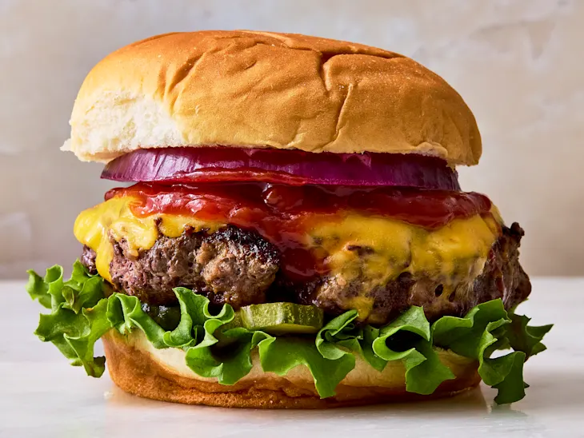

01 / 05

United States
SIGNATURE FOOD · UNITED STATES
Hamburger
A grilled patty served inside a bun with toppings.
THE STORY
The modern hamburger rose to prominence in the United States around the turn of the twentieth century.
WHY IT'S LOVED
It became a worldwide fast-food symbol with countless regional variations.